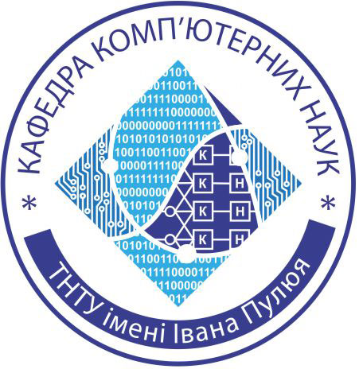
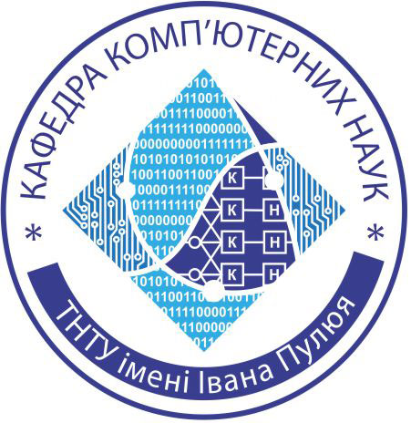

Про мене
Мене звати Владислав Духній, і я є студентом Тернопільського національного технічного університету імені Івана Пулюя. Я навчаюся на факультеті інформаційних систем та комп'ютерних наук, де вивчаю сучасні технології та програмування.
Мій шлях у світі технологій почався ще в школі, коли я вперше познайомився з програмуванням. Це захоплення переросло в серйозний інтерес до розробки програмного забезпечення та вивчення нових технологій.
У вільний час я активно займаюся розробкою власних проектів, вивчаю нові мови програмування та фреймворки. Моя мета - стати професійним розробником програмного забезпечення та внести свій внесок у розвиток української IT-індустрії.
Крім програмування, я цікавлюся електронікою та DIY проектами. Люблю розбиратися в роботі різних пристроїв та створювати щось нове. Це допомагає мені краще розуміти принципи роботи сучасних технологій.